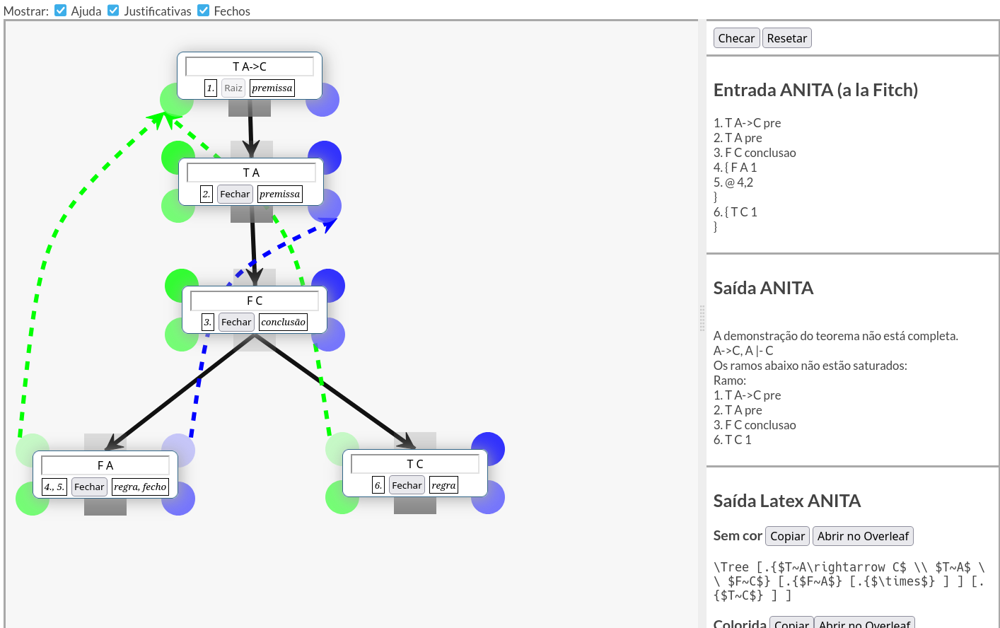

- Desenhe o Tableau Analítico.
- Arraste ou faça duplo clique na barra preta inferior para adicionar novos nós.
- Preto: Aplicação de regras de desenvolvimento da árvore.
- Verde: Justificativa da aplicação da regra.
- Azul: Fecho/contradição.
- O ANITA espera que as regras sejam aplicadas na mesma ordem das tabelas de regras, com as regras beta (bifurcações) com o primeiro nó filho à esquerda do segundo.
- A escolha de cores dos nós é opcional.
- Links:
Exemplo
GANITA: Relatório, Repositório, licença e autoria.Vídeo Exemplo
ANITA: Site, Manual, Artigo, Repositório.
Símbolos
Negação (Não/¬)
~
Conjunção (E/∧)
&
Disjunção (Ou/∨)
|
Condicional (Se Então/→)
->
Proposição
A
Predicado
P(x)
Variável
x
Quantificador Existencial (Existe um/∃)
Ax P(x)
Quantificador Universal (Para todo/∀)
Ex P(x)
Precedência
( ... )
Exemplo 1
Ax P(x) -> ~Ex ~P(x)
Exemplo 2
Ay (P->Q(y)) -> (P->Ay Q(y))
Regras
| Tipo α |
|---|
| Tipo β |

|

|
|---|
| Tipo γ | |
|---|---|
| x é substituível por t em φ | |

|
|
| Tipo δ | |
|---|---|
| a é uma variável nova | |